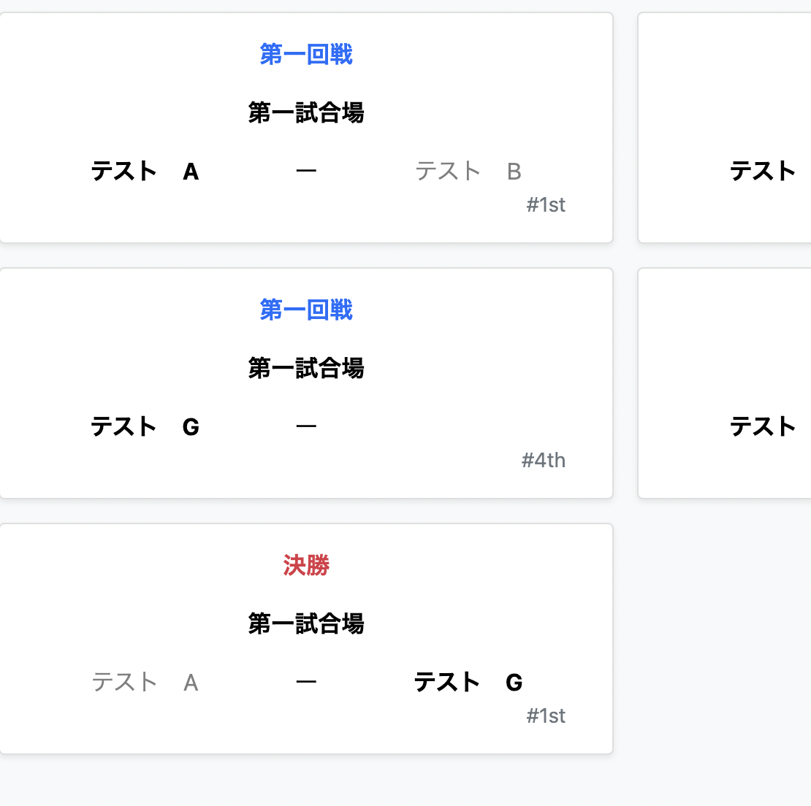
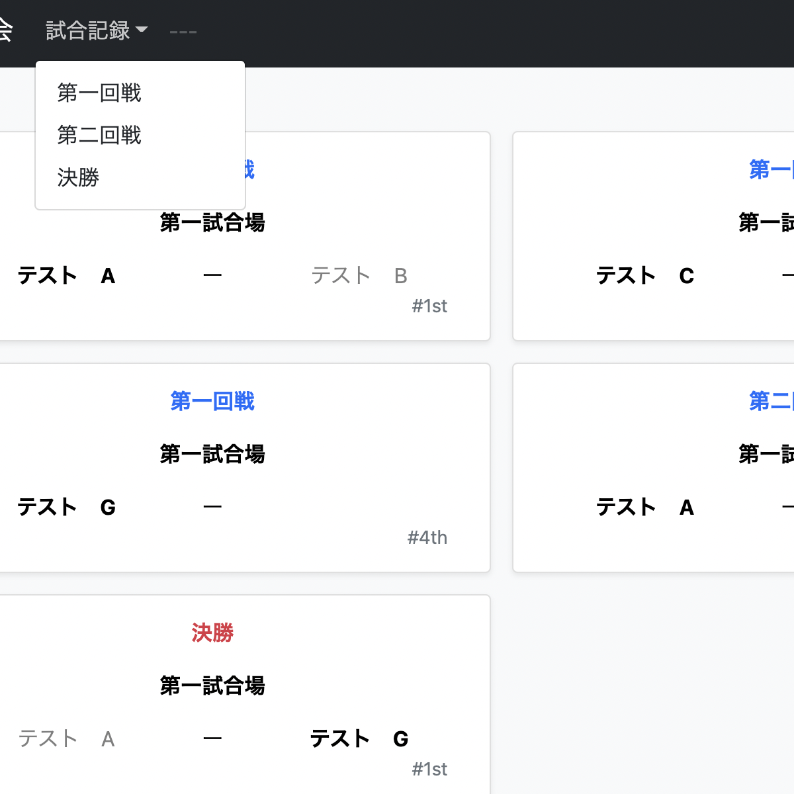

大会Log（大会記録管理アプリ）
開発環境
Ruby / Ruby on Rails / MySQL / GitHub / Heroku / Visual Studio Code
-
概要
制作時間 240時間 URL https://taikailog-37096.herokuapp.com/ ID admin PASS 2222 -
動作テスト
テスト用アカウント
mail admin1@admin.com PASS admin1
OUTLINEアプリケーションの概要
オリジナルアプリケーションとして、大会の運営に関して遠隔での管理と確認が可能なアプリケーションを開発しました。
主な機能は、ユーザー管理機能、大会情報の投稿機能です。
トップページより、管理者ユーザーとしてログイン可能な特定のユーザーのみが新規投稿が可能です。
投稿された情報をクリックすることで大会内での試合結果が、視覚的にシンプルなデザインで分かるようになっています。
また、投稿の編集・削除が可能であり、投稿者のみが処理を行えます。
-
開発に至った経緯
学生時代に大会などを運営、もしくは参加する中で実際に試合の進捗状況がシンプルにわかるようなアプリケーションがあるといいなと考えました。
他の分野やスポーツにおいても、アップをしながら確認できたり、空いた隙間時間に気になる試合の結果が確認できるようになると便利なのではないかと考えました。
そこで、試合内容の結果が色別で表示され視覚的に認識しやすいアプリケーション、を意識し作成しました。
-
開発で工夫したこと
試合の結果の詳細を見ずに結果を認識できるようにScore入力を終えた時点で勝敗によって色が変化するように実装しました。
また、決勝は多くの人にとって特別なことであり、決勝の文字列のみは赤文字に変化するように実装しました。
-
今後実装したいと思っていること
表示される内容をリストから選択することで、特定のものが非同期通信で表示されるようにしたいと考えています。
お気に入り機能を実装し、気になる試合の情報へ簡単にアクセスできるようにしようと考えています。
登録される試合情報に関しては現段階で考えうる情報量では詳細ページへ遷移する必要はなく、クリック時に非同期通信での表示ができればいいなと考えています。